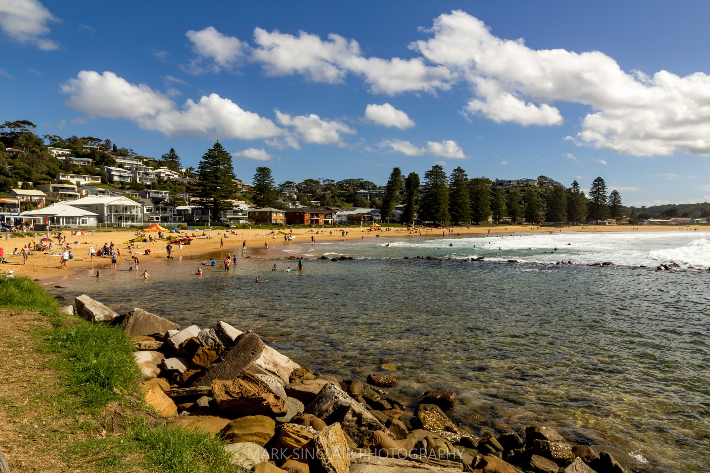
My Coast - Avoca Beach
Explore Story →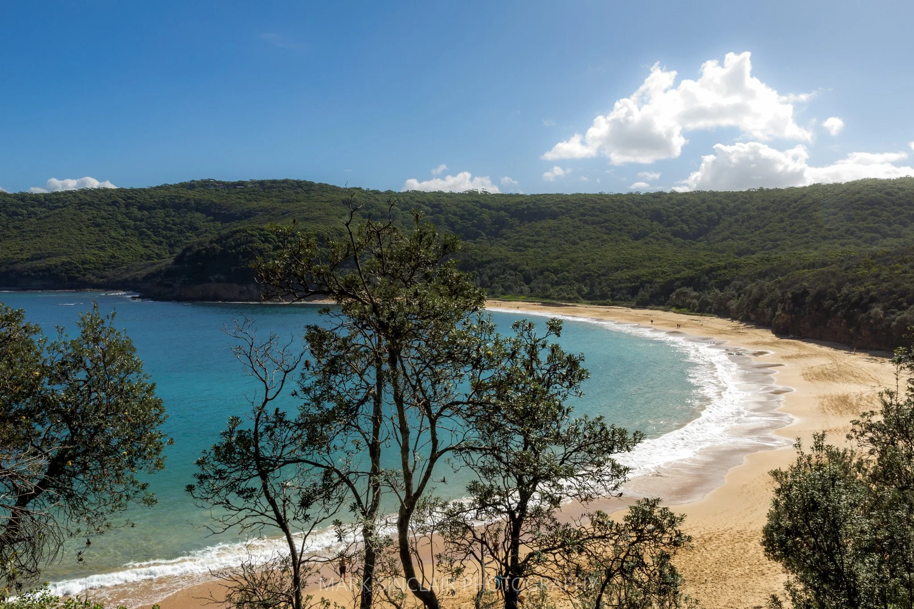
My Coast - Bouddi National Park
Welcome to the second instalment of my fortnightly photo blog exploring my local area. This week I will take you to one of the many beautiful national...
Explore Story →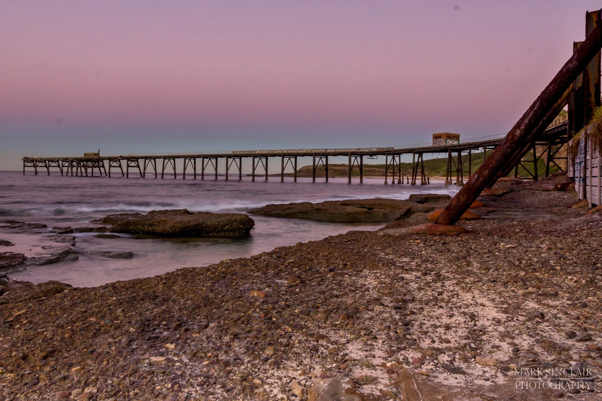
My Coast - Catherine Hill Bay
Welcome to the third installment of my fortnightly photo blog exploring my local area. This week's destination is Catherine Hill Bay.
Explore Story →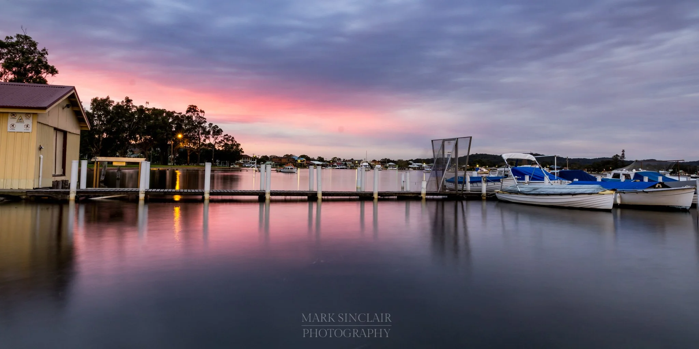
My Coast - Davistown
Welcome to the fourth instalment of my fortnightly photo blog. This week's destination is Davistown
Explore Story →
My Coast - Ettalong Beach
Welcome to the fifth instalment of my fortnightly photo blog exploring my local area, the Central Coast. This week's destination is Ettalong Beach.
Explore Story →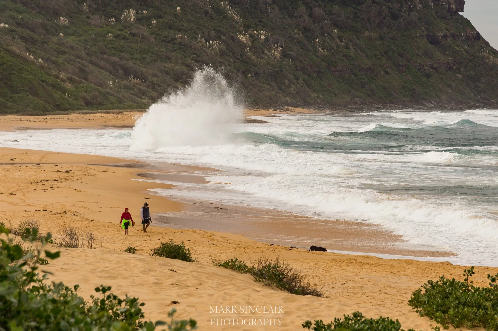
My Coast - Forresters Beach
Explore Story →
My Coast - Gosford
Welcome to the seventh instalment of my fortnightly photo blog exploring my local area, the Central Coast. This week's destination is Gosford.
Explore Story →
My Coast - Halekulani
Welcome to the eighth installment of my fortnightly photo blog exploring my local area, the Central Coast. This week's destination is Halekulani.
Explore Story →
My Coast - Jilliby
Welcome to the tenth installment of my fortnightly photo blog exploring my local area, the Central Coast. This week's destination is Jilliby, an area...
Explore Story →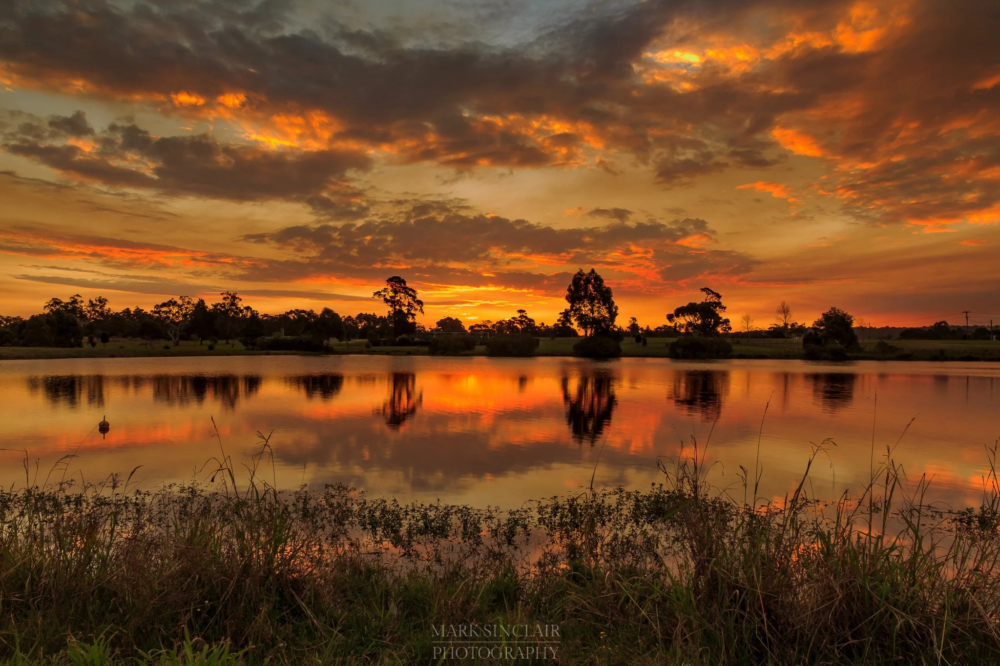
My Coast - Kariong
Welcome to the eleventh installment of my fortnightly photo blog exploring my local area, the Central Coast. This week's destination is...
Explore Story →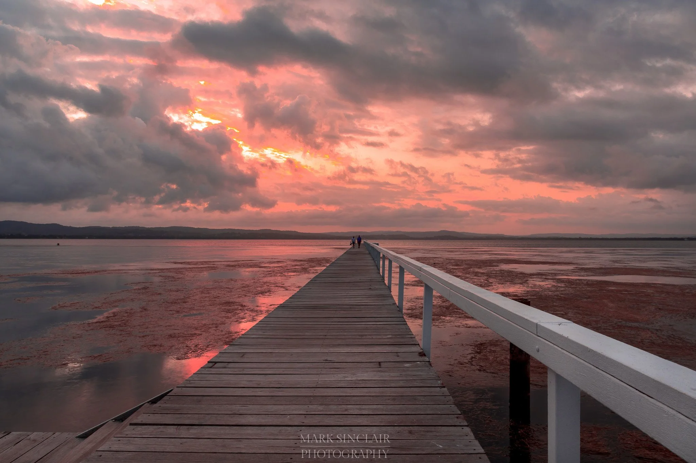
My Coast - Long Jetty
Welcome to the twelfth installment of my fortnightly photo blog exploring my local area, the Central Coast. This week's destination is Long Jetty.
Explore Story →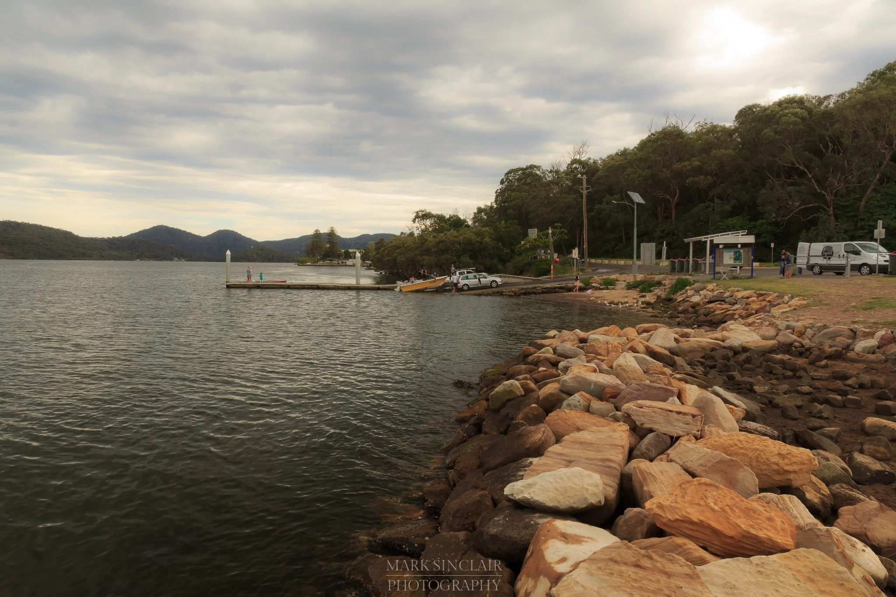
My Coast - Mooney Mooney
Welcome to the thirteenth installment of my photo blog exploring my local area, the Central Coast. This week's destination, Mooney Mooney, marks the halfway...
Explore Story →
My Coast - Norah Head
Welcome to the fourteenth installment of my photo blog exploring my local area, the Central Coast. This week’s destination is Norah Head.
Explore Story →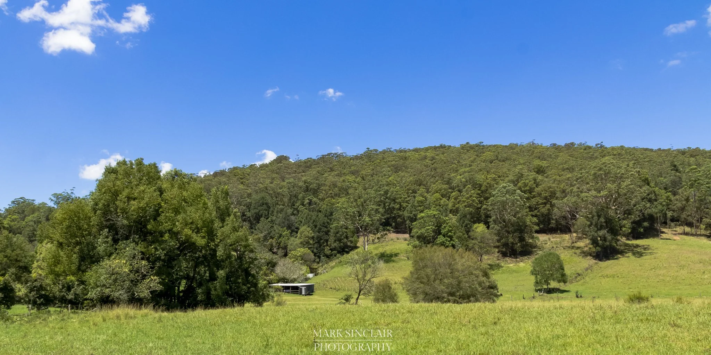
My Coast - Ourimbah
Welcome to the sixteenth installment of my photo blog exploring my local area, the Central Coast. This is my first post of 2017 and this week I...
Explore Story →
My Coast - Pearl Beach
Welcome to the fifteenth installment of my photo blog exploring my local area, the Central Coast. This week I have broken with tradition and skipped a letter. I will...
Explore Story →
My Coast - Rocky Point
Welcome to the seventeenth installment of my photo blog exploring my local area, the Central Coast. This week's destination, with the absence of any suburbs...
Explore Story →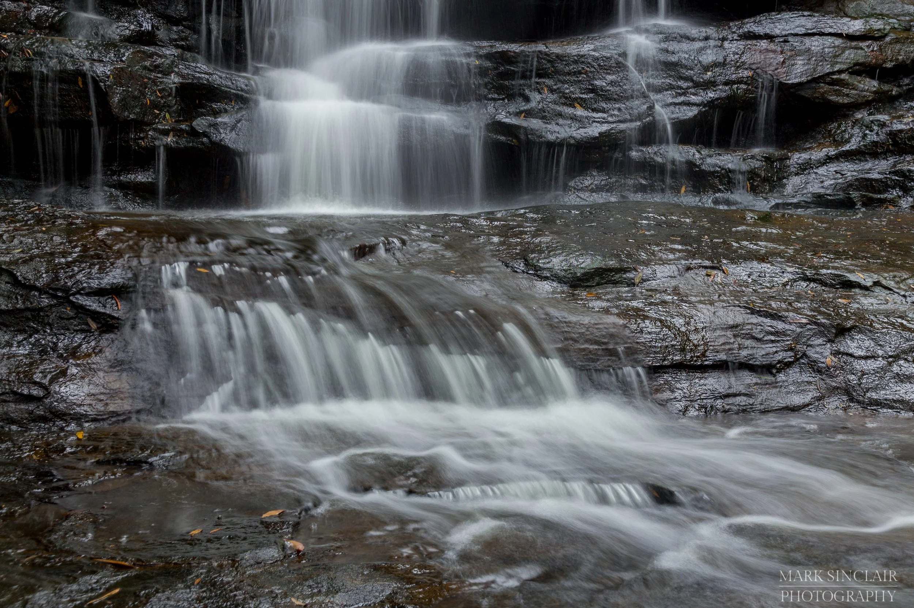
My Coast - Somersby
Welcome to the eighteenth installment of my photo blog exploring my local area, the Central Coast. This week is my “S” destination, Somersby.
Explore Story →
My Coast - St Huberts Island
Welcome to the ninth installment of my fortnightly photo blog exploring my local area, the Central Coast. This week's destination is St Huberts Island.
Explore Story →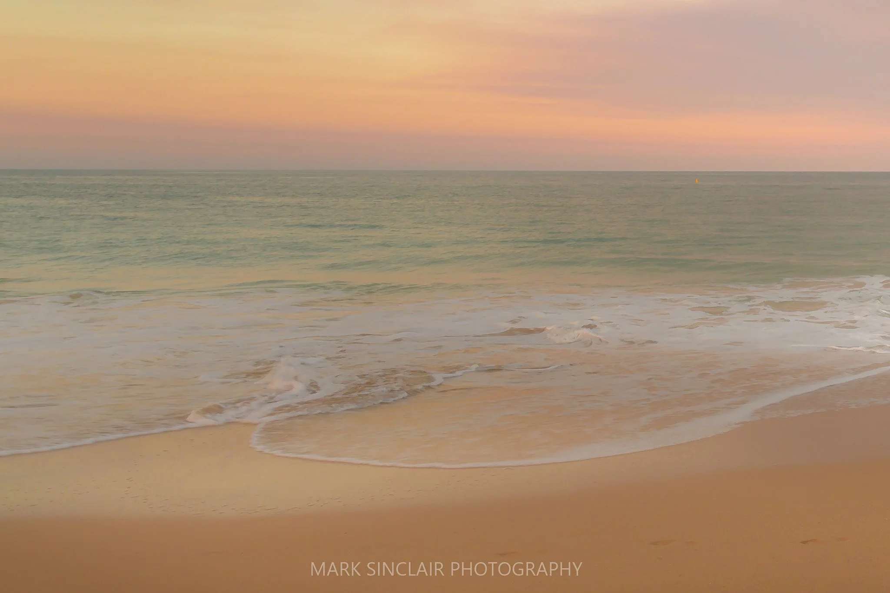
My Coast - Terrigal
Welcome to the nineteenth episode of my photo blog exploring my local area, the Central Coast. This week is my "T" destination, Terrigal.
Explore Story →